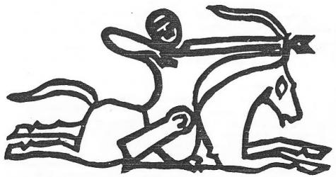

Devlet teşkilâtına ve törenlere ait birçok adetlerin, devrin değişmesi ve toplumun da ileri bir seviyeye yükselmiş olması sebebiyle, artık hayatta uygulama imkânları kalmamıştı. Fakat zaman, bu adetleri halkın hafızasından kolaylıkla silip atamamıştı da. Artık bunlar, efsaneleşmiş birer hatıra idiler. Hatta ataların adetlerine bir saygı olsun diye, töre gereği olarak, devlet merasimlerinde yer aldıklarını da görüyoruz. Bu adetler Türk mitolojisinin artık birer parçası (Épisode) haline gelmişti. Bu parçalar toplanıp bir araya getirildiği zaman, gerçek Türk mitolojisinin temelleri atılmış olacaktır.
Bunu bir örnekle açıklayalım: Eski bir Göktürk rivayetine göre bir kimse hükümdar ilân edilmeden önce, boynuna ip geçirilerek nefesi kesilinceye kadar sıkılır ve bundan sonra da ne kadar zaman hükümdarlık yapacağı sorulurmuş. Bu, tam bir efsane motifidir. Çok eski çağlarda, belki de tarihten önceki devirlerdeki Türklerin sosyal hayatını yansıtan bir hatıradır. Gerçi belirli bir zaman için seçilen reisler, Türk içtimai tarihinde görülmemiş değildir. Fakat bu âdeti, yüksek bir toplum hayatına erişmiş olan Göktürklerde hâlâ uygulanır görmek, imkân dışında olan bir şeydir. Her şeyden önce Göktürklerde, gerçekçi bir devlet düşüncesi ve tam bir "Dünya İmparatorluğu" düzeni vardı. Onlarda her kağan, bilhassa başlangıçta, kendi kuvvet ve kudretine göre mevkiini elde eder ve sonra da bu hükümdarlık sağlam ve değişmez veraset kaidelerine göre soyuna geçerdi. Göktürk tarihi ve hükümdarlarının soy kütüğü, bunun dışında bize böyle garip bir olay göstermiyor. Göktürk tarihini iyi bilenler için, meselâ Bumın, Mohan, İlteriş Kağanlar gibi Türk hükümdarlarının, boynuna ip geçirilerek yarı boğulma haline getirildiklerini düşünmek, çok gülünç bir şey olur. Bu seçim usulü, esasen Göktürkler hakkında ilk bilgileri veren Çin kaynaklarında geçer. Göktürklerin sonraki tarihleri üzerinde çok geniş bilgiler veren Çin kaynakları ise, bu gibi bir törenden söz bile açmazlar.
Göktürk devleti çağında, hükümdarların bir keçe içine konarak 9 defa döndürülmesi de, olağan şeylerden sayılmamalıdır. Böyle bir törene, tahta çıkma usulleri hakkında geniş bilgi veren sonraki Çin kaynaklarında rastlamıyoruz. Fakat gerçek olan bir şey varsa, bu âdetlerin eski Türklerde bulunuşuydu. Ama devrin değişmesiyle uygulama imkânları kalmamıştı. Bu, başka bir meseledir. Bu âdetler hakkında bilgi veren Çin kaynağı, o çağda Türkler hakkında fazla bir şey bilmiyordu. Aralarındaki temas azdı ve birbirlerinden çok uzak idiler. Kaynak, Türkler hakkında şurdan burdan duyduğu bilgileri verirken, birden bire durur ve yeni bir rivayeti anlatmağa başlar. Bundan da anlaşılır ki, Çin tarihi yeni bir kaynağa başvurmuştur. İşte bu bölümde, Türk hükümdarlarının boyunlarına ip bağlandığından, vs. den bahsedilmeğe başlanır, öyle anlaşılıyor ki bu yeni kaynak, Türklerin çok daha eski âdetlerinden bahseden çok önemli ve eski bir rapor ve vesikadır. Ama bize kadar kısaltılarak gelen bilgiler bundan ibarettir. Çince metin şöyledir:
"...Yeni bir hükümdar seçileceği zaman, devletin ileri gelenleri onu bir keçe içine koyarak, yeni yerine getirirlerdi. Güneşin gezindiği yönü takip ederek, onu 9 defa çevirirler ve her çevrilişte de, ona tâbi olan herkes saygı ile eğilir ve onu selâmlardı. Bu şekilde çevirmelerden ve saygı duruşlarından sonra vezirler, onun ata binmesine yardım eder ve yürütürlerdi. Ondan sonra boynuna bir ipek iplik geçirip boğazını sıkarlardı. O kadar sıkarlardı ki, baygın bir hâle gelir ve ipliği gevşeterek ona şöyle sorarlardı : -"Kaç sene bizim kağanımız olacaksın?" Baygın olan Kağan konuşamaz ve ancak mırıldanırdı. Bu mırıldanmalardan mana çıkararak, kaç sene kağanlık yapacağını anlarlardı..." (CS, 50, 2a).
Hükümdarların tahta çıkma merasiminde bir halı veya keçe üzerine oturtulması âdeti, Toba devletinde de vardı. Çin kaynaklan Göktürklerle Toba'lar arasında sıkı bir bağ bulunduğunu açıkça ifade ederlerdi. Gerçi Toba devleti Çin'in kuzeyinde ve Göktürkler ise Orta Asya’da oturuyorlardı. Fakat her ikisi de nihayet Büyük Hun devletinin an’anelerini devam ettiren iki zümreden başka bir şey değil idiler. Ayrıca yine Çin tarihleri, Göktürk devletini Toba'ların içinden kaçıp gelen asil ve eski Hun kabilelerinin kurduğunu da kaydederler. Bütün bunlar bize gösteriyor ki, hükümdarı halı üzerinde kaldırma âdeti, Büyük Hun Devletinden ve belki de tarihten önceki çağlardan beri gelen bir Orta Asya an'anesi idi. Biliyoruz ki Altay ve Sibirya Şamanizm’inde, Şamanların göğe çıkma töreninden önce, Şaman da keçe üzerine konup kaldırılırdı. (Bk. Potanin, Oçerki, IV, s. 58)
M.S. 532 senesinde yeni Toba imparatoru tahta çıkmış ve bunun için de şehrin dışında bir merasim yapılmıştı. 7 kişi keçe bir halının altına girerek halıyı tutmuşlar ve yeni imparator da bunun üzerine çıkarak, batıya dönmek suretiyle, saygı duruşunda bulunmuştu. Yine bu töreni bize haber veren Çin kaynağı, bu merasimin eski Toba an’anesine göre yapıldığını da ilâve eder (PS, 5, 9 b).
Bilindiği üzere Türklerin ve diğer Orta Asya kavimlerinin saygı gösterdikleri yön, doğu idi. Toba'lar da ise eski Orta Asya an’anelerinden biraz kayma olduğu ve saygı için, doğu yerine batıya dönmeğe başladıkları görülür.
Tahta çıkmadan önce yapılan birçok adetlerin unutulmasına ve tatbikattan kaldırılmış olmasına rağmen, usulen bazı formalitelerin halâ uygulandıkları da muhakkaktı. Meselâ veraset prensiplerine göre tahta çıkması gereken bir hakan, umumiyetle direniyor ve kendisinin bu mevkiye lâyık olmadığını ileri sürüyordu. "Hükümdarlık tekliflerini reddetme" keyfiyetine, Göktürk tarihine ait Çin kaynaklarında da sık sık rastlamak mümkündür.
Çin tarihleri bunları sanki gerçek bir olaymış gibi kabul etmişler ve o üslûpla yazmışlardır. Hâlbuki eski Türk töresine göre, tahta çıkma merasiminin de bir protokolü vardı. Hükümdar ilân edilmeden önce, Türk töresine ve terbiyesine göre herkesin böyle bir alçak gönüllülük göstermesi ve bu vazifeyi üç defa reddetmesi usulden idi. Bunlardan bir tanesini Çin kaynaklarından buraya aynen alalım:
"Yung-yü-lü (İşbara Kağan'ın oğlu), amcası Ch'u-lo-hou'a bir adamını gönderip (başkente) çağırdı. Amcası kendisinin tahta çıkarılmak istendiğini öğrenince şöyle dedi:
- "Mu-han Kağan'dan beri, küçük kardeşleri büyük kardeşlere ve meşru olmayan çocukları da, meşru prenslere tercih etmeğe başladık. Bu yolla, bizim atalarımızın uyguladığı törelerden ayrılmış bulunuyoruz. Bunun için de, aramızda hiç kimsenin kimseye saygısı kalmadı. Tahta siz çıkmalısınız. Siz tahta çıkarsanız, ben de memnuniyetle sizin önünüzde diz çökeceğim!" Bunun üzerine Yung-yü-lü, amcasına şöyle haber gönderdi:
- "Siz benim amcamsınız. Siz ve babam aynı köktensiniz ve tam bir kütüğü tamamlıyorsunuz. Ben ise, bu ağacın dalı ve yaprağıyım. Ağacın kökü ve kütüğü dururken, benim kağan olmam ve aile büyüklerinin de benim maiyetime girmesi mümkün değildir. Ayrıca ben, çok zayıf ve gencim. Bu sebeple, (senin kağan olmanı) vasiyet eden babamın arzularının karşısına çıkamam. "
Beş, altı defa karşılıklı komplimanlardan sonra, nihayet amcası Ch'u-lo-hou, kağan oldu..." (SS, 84, 4a).
Çin'in kuzeyinde kurulan Hıtay devletindeki cülûs merasimleri hakkında, Çin kaynaklarında oldukça geniş malzeme bulunur. Yeri geldikçe söylediğimiz gibi bu devleti Kitan kabileleri kurmuştu. Kitan’lar, Proto-Moğolların güney-doğu soylarından biri idiler. Göktürk Devleti bulunduğu müddetçe de, Türk hâkimiyeti altında yaşamışlardı. Bu sebeple Göktürk ve Uygur devlet an’anelerini, Hıtay imparatorluğunda bol bol bulmak mümkündür. Kitan'ların ve dolayısıyla Hıtay devleti kültürünün Türklerle ilgisi üzerinde, metinlerin izahını yaparken sık sık duracağız. Aşağıda inceleyeceğimiz Çince belgeler, mukayese malzemesi olarak Türk kültürü için büyük bir değer taşırlar.

Şekil 39: Eski bir Macar atlısı.
Hıtay imparatorunun tahta çıkma merasimi ile ilgili metin, Hıtay devletinin resmî tarihinden alınmıştır. Tören, mümkün olduğu kadar açık ve realist olarak anlatılmıştır. İmparator ilân edilirken, devletin ileri gelenlerinin bir halı tuttukları da, metinde söylenmektedir. Fakat hükümdarın bu halı içine konup bir kaç defa kaldırılıp kaldırılmadığı hakkında hiç bir bilgi verilmemektedir. Öyle anlaşılıyor ki Kitanlar cülus merasimlerinde, sembolik de olsa bu eski Türk-Moğol âdetini yerine getiriyorlardı. Fakat devrin değişmiş olması, tekâmül etmiş bir devlete ve hükümdara sahip olmaları sebebiyle, âdetin bütün safhalarını uygulamamış olmaları da muhtemeldir.
Hükümdarı bir ata bindirip, koşturduktan sonra düşürüp, sonra da bir keçe örtü ile üzerini örterek taht yerine getirmeleri de eski an’anelerin tesiri altındadır. Bununla beraber, metinde aydınlatılmayan bazı noktalar da vardır:
Hükümdarı halının üzerine bile çıkaramazken, nasıl olup da attan düşürdükten sonra, keçe örtüye sararak taht yerine getirebildikleri şüphe ile bakılacak noktalardan biridir. Öyle anlaşılıyor ki, eski an’anelerin tesirinde olarak, protokol sırasına göre, metinde yazılmış olan bu âdetin günlük hayatta pek yeri yoktu. Yahut da ikinci metindeki âdetler gibi bu tören gizli toplantılarda yapılıyor veya yapılmış gösteriliyordu.
Bu metinde, halkın hükümdara ve hükümdarın da halka karşı yapmış olduğu konuşmalar, Türklerinkine nazaran çok daha iptidaîdir. Hükümdar adayının tahta çıkmamak için gösterdiği bahaneler ve yaptığı konuşmalar ise, yukarıdaki Türklerle ilgili bahislerde incelenmiştir. Hıtay imparatorunun tahta çıkma töreni hakkında bir Çin kaynağı şöyle diyor:
"Ateş yakma suretiyle, hükümdarın tahta çıkışını "Göğe bildirme" merasimi için, münasip bir gün seçildi. Daha önce merasimin yapılması için bir salonda, taht için yüksek bir yer yapıldı. Bu yer, kütüklerin üç köşeli konması suretiyle, çok yüksek olarak yapılmıştı. Bunun üzerine de bir kurban sunağı konmuştu. Bu sunağın her tarafı yüzlerce metrelik halılarla ve tahtın üzeri ise ejderha resimleri ile süslenmişti. Bu yüksek yerin yanında, imparatorun annesi ve yakınlarına, "Yeniden doğuş" merasiminin yapılması için de ayrıca bir mabet yapılmıştı. Merasime gelen İmparator, önce bu mabede girer ve orada ölen anne ve babasına dua ederdi. Bundan sonra 9 Kitan kabilesinin reisleri, İmparatorun önünde yürümek suretiyle taht salonuna girerlerdi. Bu arada her tarafta da sıkı bir muhafaza tertibatı alınırdı. Merasim alayı salonun kuzey-doğu yönüne doğru yürür ve göğe bir kurban verirdi. Bundan sonra imparator bir ata biner ve atı dörtnala koştururdu. İmparatorun hemen arkasından, annesi tarafından gelen akrabalarının en yaşlısı onu takip ederdi. İmparator atla koşarken birden bire yere düşer ve arkasındakiler de hemen ona yetişerek üzerine bir keçe örterlerdi. İmparator bu suretle yüksek bir yere çıkınca, bütün büyük memurlar ve kabile reisleri geri çekilip, merasim düzenine geçer ve belirli bir uzaklıktan ona arz-ı übûdiyet eylerlerdi. İmparator, bunun üzerine bir adam gönderip, devletin ileri gelenlerine şöyle söyletirdi : - "Ölen imparatorun amcaları ile büyük kardeşleri halen hayattadırlar. Onların içinden, lâyık olanlarından biri, pekâlâ hükümdar seçilebilirdi. Ben bu mevkiye lâyık değilim. Bu durumda devlet idaresini nasıl başarabilirim?" Bunun üzerine devlet erkânı hep birden ona şöyle cevap verirdi : - "Eski imparatorun yerinde arzusu ve siz haşmet-maablarının da büyük meziyetleri dolayısıyla, tebaanız olan bizler, size tâbi olmak istiyoruz. Bizim aklımıza başka bir şey nasıl gelebilir?" İmparator bu ısrar karşısında daha fazla dayanamaz ve şöyle demek zorunda kalırdı : - "Sizin isteklerinize uymak zorundayım. İdarem sırasında, mükâfat ve cezaları herkese namus yolundan ayrılmayarak vereceğim. Lâyık olanları terfi ettirip, onları önemli vazifelere tayin edeceğim. Eğer bunlar katil suçu ile karşıma gelecek olurlarsa, bütün vazife ve rütbelerinden mahrum olmuş olacaklardır. Benim emirlerime itaat edip onları büyük bir sadakatle ortadan kaldırmalısınız!" Bunu duyan devletin ileri gelenleri hep birden yüksek sesle bağırır ve şöyle derlerdi: - "Biz, haşmetmaablarının her zaman için emrindeyiz!."
"Merasimin yapıldığı yer, taş ve topraklar yığılmak suretiyle işaretlenir ve orası terkedilirdi. Bundan sonra ölen imparatorun resimlerinin bulunduğu mabede gidilerek saygı gösterilir ve hazır bulunanlara ziyafet verilirdi.
"Ertesi gün imparator, bu yerden ayrılır ve tahtın bulunduğu askerlerle kuşatılmış, yüksek yere giderdi. Tahtın etrafında atalara ait kitabeler dizilir ve devletin yüksek erkânı da etrafta ayakta dururlardı. Büyüklerden bazılarının da, bir halının kenarlarından tutmuş olarak dizildikleri ve bir şeyler mırıldandıkları görülürdü. Bu sırada başvekil, yeşim taşından imparatorluk mührünü getirir ve yine yeşim taşı üzerine oyulmuş bir ferman getirerek okumağa başlardı. Yeni tevcih edilen bir ünvanla imparator ilân edilir ve orada hazır bulunanlar, "imparator, bin sene yaşa!" Diye, üç defa bağırırlardı. Bu yolla herkes sadakatini ifade etmiş olurdu. Kabile reisleri ve büyük memurların her biri, krem renginde birer koyun sürüsü hediye eder ve böylece merasim biterdi. Eski elbisesini çıkararak imparatorluk elbisesini giyinen hükümdar, bütün tebaasına bir şölen verir ve hediyeleri kabul ederdi." (LS, 49, 3b-4bJ.
Bu metin açıklamalarını, ikinci bölümün sonunda yapacağız. Aşağıda tercümesini vereceğimiz ikinci metin, M.S. 1058 senesinde Hıtay imparatorunun nasıl tahta çıktığını anlatan önemli bir tarih belgesidir. Bundan önceki vesika Hıtay devletinin resmî tarihinden alınmıştı. Bu sebeple merasimin safhaları gayet açıt olarak gösterilmiş ve devlet protokolünde, mümkün olduğu kadar mistisizmden kurtulmağa çalışılmıştı. Bu metin ise, ikinci elden ve hususi bir kaynaktan alınmıştır. Bununla beraber resmî tarihin işine gelmeyen tarafları belirtmesi bakımından, ayrı bir önem taşır. İmparatora benzeyen 9 kişi seçilerek imparatorla beraber aynı elbise giydirilmesi ve bunlardan hangisinin imparator olduğunun da bir nevi yarışma yolu ile bulunması, resmî tarihte yoktur. Adeta saklambaç oyununa benzeyen böyle bir olayı yazmak, belki de resmî tarihin işine gelmemiştir. Öyle anlaşılıyor ki, büyük imparatorluk kuran Kitanlar, eski an'anelerini unutmayarak, bunları da devam ettirmek istemişler; fakat bunlardan bazılarını, imparatorluk merasim protokolüne sokamamışlardı. Bunun üzerine hususi seanslar tertip ederek eski an'anelerini devam ettirmişlerdi. Bunları duyan Çinliler de, kendileri için garip şeyler sayılan bu olayları, kitaplarına almışlardır. Hükümdarı halı üzerine koyup kaldırma, çok eski bir Orta Asya devlet an'anesidir. Bu merasim Hıtay devletinin resmî tarihinde yer almıştır. Çünkü bu adet, devlet merasimlerinden kaldırılmayacak kadar önemli bir an'anedir. Özel bir seanstan bahseden aşağıdaki metinde ise, halı merasimini göremiyoruz.
Dokuz kişiye aynı elbiseyi giydirip, bunlar arasından bir başkan seçme âdeti de, tamamıyla manasız değildir. Göktürk çağında Kitanların başında bulunan Yao-lien ailesi zamanında devlet, Dokuz kabileden meydana geliyordu. Daha önce ve daha sonra Kitanlar daima "Sekiz Kabile" olarak kalmışlardır. Bu dokuzlu teşkilât, belki de Türkleri taklit suretiyle ortaya çıkmıştı. Bu eski başkan ailesi, yani Yao-lien'ler, Hıtay devleti zamanında da (M.S. 907-1125) eski önemlerini kaybetmemişler ve yeni devlet içinde asil bir sınıf olarak yaşamışlardı. Dokuz kişiye aynı elbiseyi giydirip, aynı çadırlara yerleştirerek birisinin reis seçilmesi, herhalde Göktürk çağından gelen sembolik bir an'ane olmalıdır. Dokuz kişi, Dokuz kabile reisi idiler. Bu sembolik törenle, dokuz küçük reis arasından, büyük bir reis seçimi yapılmak isteniyordu.
Gerçekten Orta Asya kavimlerinde teorik olarak reis tayini, bir nevi seçime tâbi tutularak yapılırdı. Bunun yanında reis adayının kabiliyet ve kudreti, her çağ için ağır basan bir faktördü. Bununla beraber hâkimiyetini zorla kabul ettirmiş hükümdarlar için bile, sembolik olarak bir seçim merasimi yapılmamış değildir. Aşağıdaki metin böyle an'anevî ve özel bir töreni bize anlatması bakımından ayrı bir önem taşır. Metinde geçen diğer merasimler, aşağı yukarı öncekilere benzeyen ve Hıtay imparatorluğunda öteden beri yapılagelen törenlerdir.
"Tahta çıkma merasiminden önce imparator ilkönce, bir gece gecelemek için, yasak bölgeye girerdi. İkinci gün tam manasıyla imparatora benzeyen 9 kişi seçilir ve hepsine imparatorun giydiği elbiseler giydirilirdi. Bu suretle 10 tane imparator meydana çıkar ve herkes kendisinin imparator olduğunu iddia ederdi. Aynı günün gece yarısında herkes, küçük yasak bölgeden "Büyük yasak bölge"ye çıkarılır ve her biri ayrı ayrı birer kandille bir iskemle bulunan 10 çadıra konurdu. Üçüncü günün sabahında bir Kitan büyüğü, çadırların önünde birer birer durup, gerçek imparatorun bunlardan hangisi olduğunu tespite çalışırdı. Bütün büyükler sıra ile bu vazifeyi yaparlardı. Her kim imparatoru tanırsa, ona binlerce baş sığır, koyun, deve ve at hediye verilirdi... İmparator keşfedildiğini görünce, hemen inkâra kalkışır ve ben hükümdar değilim, derdi. Bulan da ısrar eder ve imparator sizsiniz, derdi. Bunun üzerine bütün halk, "Siz imparatorsunuz!" Diye yüksek sesle bağırır ve imparator da, "Evet öyle!" Diye tasdik ederdi. Bunun üzerine çadırdan çıkılır ve teşrifatçıların ellerinde taşıdıkları bir sandıktan merasim elbiseleri çıkarılarak giydirilirdi. Artık bundan sonra merasim başlar ve imparator da güneşe karşı 4 defa ok atardı. Daha sonra 7 ata mabedi ile Mu-yeh dağı ve Maden Tanrısına gidilirdi. Bunlardan sonra, sıra ile şunlar ziyaret edilirdi: İmparatorun annesi, "Kırmızı kadın" (Albastı?), 7 atalar ailesi. Bundan sonra hükümdar adayı, ateş kulesinin bulunduğu yere çıkar ve kendisini imparator ilân eden fermanı burada alırdı. Bununla artık resmî formalitelerin bir kısmı bitmiş olur ve ziyafet faslı başlardı. Akşam başlayıp, gece yarısına kadar devam edecek olan ziyafetler, "Küçük yasak bölge" denen yerde yapılırdı.
"Dördüncü gün artık resmîkabuller başlardı. Yukarıda da söylendiği gibi, iki yasak bölge vardı. Küçük yasak bölge, büyüğünün kuzey-doğu kenarında bulunurdu. Kuzeydoğu yönü Kitanlarca kutsal bir yöndü. Küçük bölgede, ancak iki veya üç çadır ve büyük bölgede ise on keçe çadırla, askerlere ait 7 siyah çadır kurulurdu. Bölgelerin dışı da, muhafızlarla sıkıdan sıkıya çevrilir ve her taraf Hıtay devletinin ordusuna mahsus bayraklarla süslenirdi." (Wittfogel, s. 214).
Metinde geçen "yasak bölgeler", hükümdarın haremi gibi girilmesi yasak olan yerlerdir. Buralar, hükümdarın eski Türkçe terimle "korıg", yani koru idi. Hıtay devleti idare teşkilâtında kuzey-doğu yönü, önemli ve ayrı bir yer tutardı. Kanaatımızca bu yönün ehemmiyeti de daha ziyade, bu bölgede Proto-Moğollar, yani Shih-wei vs. gibi kabilelerin bulunmasından ileri geliyordu. Bu sebeple Büyük yasak bölgenin bu yönünde Küçük yasak bölgenin bulunmasını bu şekilde izah edebiliriz. Birinci metinde, tahta çıkma merasimindeki kurbanlar da bu yöne verilmiştir.
"Üç defa bağırmak" suretiyle hükümdar ilân etme âdeti de eski bir Orta Asya âdetidir. Bunu birinci metinde de görmekteyiz. Bu bir nevi, eski Türkçe tabiriyle, alkış idi. Hıtay devletinde üç sayısı da önemli bir yer tutardı. Selâm, üç defa diz çökme suretiyle yapılır; bazı merasimlerde üç defa dönülür ve nihayet imparatorun "Baba ailesi" de üç kabileden meydana gelirdi.
"Ateş yakma merasimi", cülûs merasimlerinin önemli bir kısmı idi. Çin kaynaklarına göre, imparatorun tahta çıkışı, yakılan ateşle göğe, yani Tanrıya bildirilirdi: (LS, 1, 2b). Türklerde böyle bir âdetin varlığı hakkında fikrimiz yoktur. Türklerde ateş, düğün vs. gibi, ya büyük törenlerde veyahut da gelecek hakkında bilgi edinmek için bir nevi fal maksadı ile yakılırdı. Böyle bir ateş, merasimin îcâbatından idi. Bununla beraber, Altay kavimleri ateşi kendileri ile Tanrı arasında bir haber verme vasıtası olarak kullanmıyorlar da değildi. Meselâ bir kurban verdikleri zaman, yaktıkları bir ateşle bunu Tanrıya haber verirlerdi. Bazıları da, kurban etini yakmak suretiyle bu haberleşmeği kurmak isterlerdi. Hıtay devletinde bu iş için de, özel bir ateş kulesi yapıldığı anlaşılıyor.
"Yedi sayısı'", Hıtay devleti zamanında kutsal sayılar arasına girmiştir. Bunu, daha ziyade Batı Türklerinin bir tesiri olarak görmek de mümkündür. Biraz da Mezopotamya kültürlerinin bir unsuru olan bu rakam, Göktürk devrinden itibaren kozmolojik bir anlam kazanmış ve dünya "Yedi iklimdir" diye, söylenmeğe, başlanmıştır. Aslında Türklerle Proto-Moğolların mukaddes rakamı dokuz ‘dur. Meselâ Altaylarda ve Doğu Sibirya Şamanizm'inde gök dokuz kat iken, batıdaki Fin-Ugor kavimlerinde yedidir. Hıtay devletinde de yedi, daha ziyade takvimde "yedi gün," "yedinci ay" gibi dinî ve "Yedi kara çadır" gibi içtimai hayatta önem kazanmıştır. Yedi ala da bunlardan biri olmalıdır. Kitabımızda bu konu ile ilgili ayrı bir bölüm vardır. (Bk. S.)
"Kırmızı albastı" da, bu metnin orijinal taraflarından biridir. Çince metinlerde, "Kırmızı kadın" diye adlandırılan bu ruh, Kitanlarda ölüm veren; fakat insanlığın da anası olan bir ruhtur. Bu konu üzerinde daha fazla bilgimiz yoktur. Türk an’anelerinde de, "Kara Albastı"nın yanında, bir de "Sarı Albastı" vardır. Sarı-kız şeklinde olan bu albastı, karaya nazaran daha az yararlıdır. Nihayet kadınlara mahsus hoppalığın bir temsilcisidir. Hıtay devletinde, "Kırmızı kadın"ın içtimaî bir mevkii de vardı. Meselâ imparator, annesini ziyaretten sonra, Kırmızı-kadın'a giderdi. Bunun iki anlamı vardır. Din bakımından, mukaddes Mu-yeh dağındaki Kırmızı-kadın mabedini ziyaret demektir. İkinci anlamı ise, kendi düğününde başkanlık eden ve başköşede oturan "Düğün ulusu" yani büyüğü olan kadına bir saygı ziyaretinde bulunmaktır. Ne olursa olsun, bu an'anelerde de eski Türk-Moğol an’anelerinin izlerini bulmak mümkündür.
Göktürklerde hükümdarın halı üzerine konması ve boğazının sıkılması hakkındaki rivayet için bk. Chou-shu, 50, 4 b; Liu Mau-ts'ai, Geschichte der Ostürken, s. 496 : Toba devletindeki aynı an'ane üzerinde yapılan incelemeler : P. Boodberg, Harvard Journal of Asiatic Studics, 4, s. 240 v.d.; W. Eberhard: Das Toba-reich Nord Chinas, Leiden, 1949, s. 357; K. Wittfogel, History of Chinese Society, Liao, s. 274-275; Göktürklerde tahta çıkmayı üç defa reddetme an'anesi : Sui-shu, 84, 4 a : Liu Mau-ts'ai, aynı eser., s. 496. Hıtay devletindeki Cülus merasimleri hakkında 1. Metin : Liao-shih, 49, 3 b - 4 b; 2. Metin : Wang 1, Ch'ung-pien yen-pei-lu, 16 a - 17.a; Wittfogel, aynı esr., s. 274 b. Hükümdarların başkanlık ettiği törenlerde ve özel düğünlerde yakılan ateşler için bk. A. İnan, Şamanizm, s. 66-67. "Sarı albastı" için de aynı eserde bilgi vardır. Bk. s. 169 v.d.